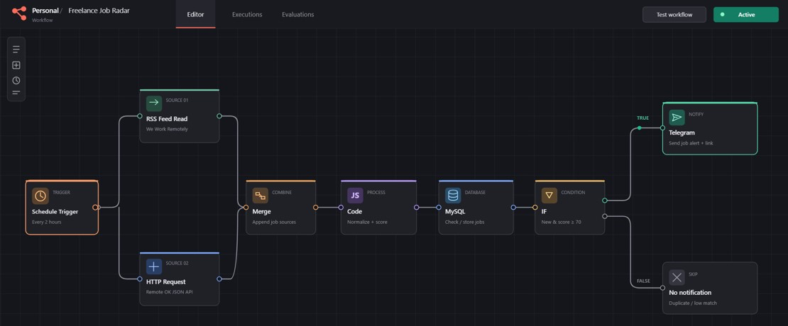
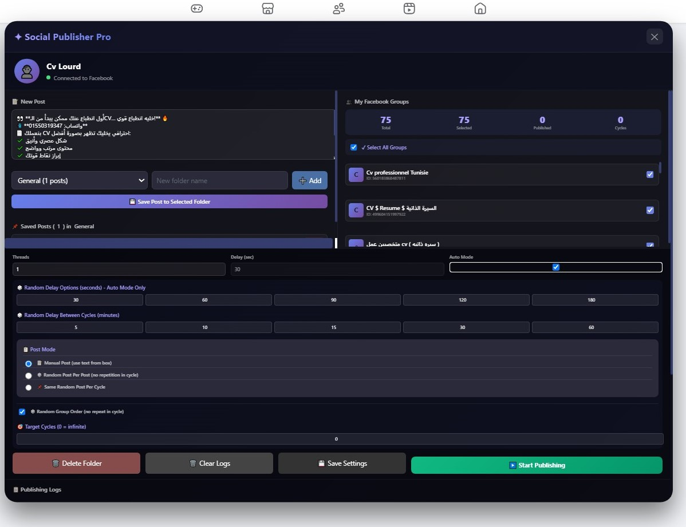
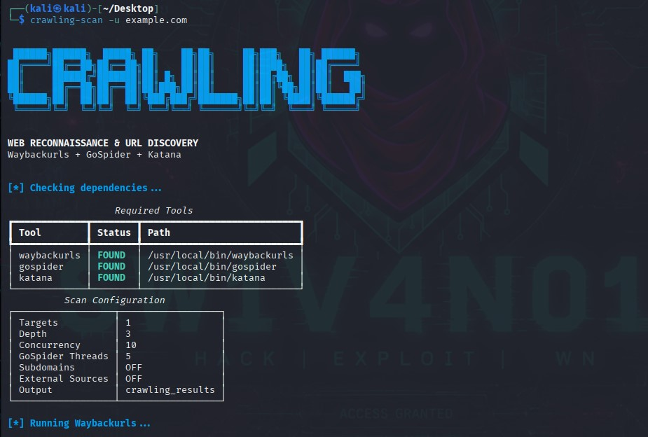
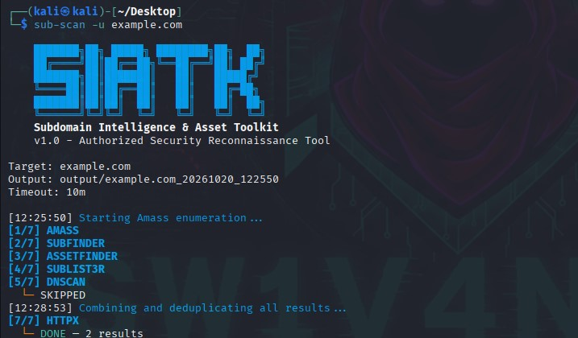
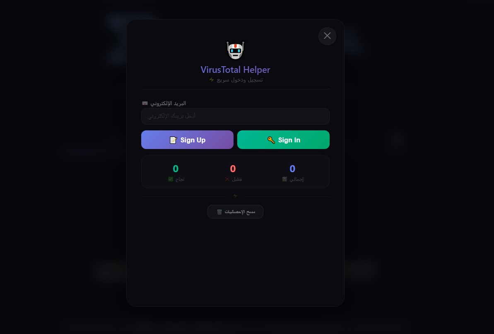
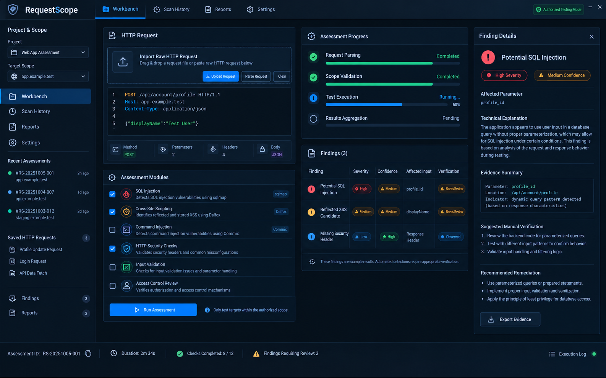

Monitoring & alerts
Freelance Job Radar
Never miss a good gig. Watches your sources, matches your criteria, skips duplicates, and alerts you fast.
n8nAPIs
I build custom automation tools that collect, process, filter, and deliver data — using n8n, browser extensions, APIs, Python, JavaScript, and Bash.
Built around your process. Tested against real scenarios. Documented for handoff.

Hi, I’m an Automation Developer focused on turning manual, repetitive, and time-consuming tasks into efficient, reliable systems for businesses and individuals.
My work covers a range of automation solutions, from complete workflows that connect multiple applications to custom tools built for specific tasks. I work with n8n, Python, JavaScript, Bash, APIs, and browser extensions, choosing the approach that best fits the problem rather than forcing every task into the same tool.
Whether you need to streamline an existing business process, automate data collection and processing, connect different systems, or build a custom tool that simplifies complex, multi-step tasks, I focus on understanding the entire process before deciding how to automate it.
Practical tools for publishing, monitoring, data collection and technical operations. Open any project to see the problem it solves, how it works, and what you get.

Never miss a good gig. Watches your sources, matches your criteria, skips duplicates, and alerts you fast.

Plan once, publish on schedule. Queues your content, posts it for you, and tells you if anything fails.

Turn scattered URLs into organized, filtered reconnaissance data — ready for security testing.

Discover subdomains, identify live assets, and turn scattered recon data into organized, actionable intelligence.

Automate API provider setup from registration and email verification to key retrieval — securely organized and ready for reconnaissance and automation workflows.

Run a whole toolchain with one command and get one consolidated, filtered report.
Every automation starts with understanding the full process, then choosing the right method, building it, testing it, and improving it.
I start by learning the complete task: what triggers it, where the data comes from, what you do by hand today, and what a perfect result looks like.
I break the process into steps and study the inputs, rules, edge cases, access limits and risks, so nothing surprises us later.
Based on the analysis, I pick the right tool for the job: an n8n workflow, a Python / JavaScript script, or a browser extension.
I implement it in small, clear steps with logging and error handling, so every part is easy to follow and maintain.
I test it against real scenarios, including bad data, duplicates, rate limits and failures, until the results are reliable.
I keep refining speed, accuracy and usability, and ship updated versions until it becomes the best version of the tool.
Find me on any of these platforms. Send me a message describing the task you repeat and the result you want.
Project summary